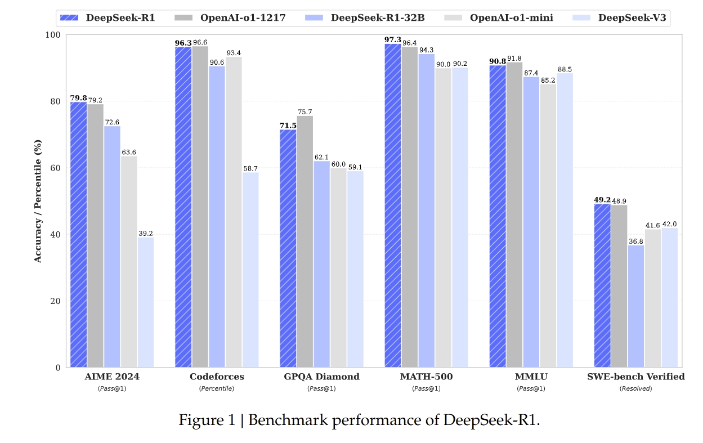

本地部署优点
- 免费
- 数据隐私
- 无额外限制（可绕过敏感话题，纯粹基于数据和算法逻辑）
- 无需网络依赖
- 灵活定制（根据自己的知识库配置微调）
- 性能和效率（不会卡顿延迟服务器繁忙）
本地部署缺点
本地部署有一个比较大的局限性，很吃设备的配置
- 满血版：DeepSeek 的完整版本，通常具有非常大的参数量。eg：DeepSeek-R1
- 蒸馏版本：通过知识蒸馏技术从满血版模型中提取关键知识并转移到更小的模型中，从而在保持较高性能的同时，显著降低计算资源需求。
DeepSeek-R1-Distill-Qwen-32B（Distill代表蒸馏，Qwen代表是基于阿里的开源大模型千问，32B代表模型中可训练参数的数量）
从性价比角度，32b就已经很不错了，当然满血版更好。

🔗 官方文档位置
📋 系统要求
硬件要求
| 模型大小 | GPU 显存 | 系统内存 | 存储空间 |
|---|---|---|---|
| 1.5B-7B | 8GB+ | 16GB+ | 50GB+ |
| 8B-14B | 16GB+ | 32GB+ | 100GB+ |
| 32B+ | 32GB+ | 64GB+ | 200GB+ |
| 67B+ | 80GB+ | 128GB+ | 500GB+ |
软件环境
- 操作系统：Linux/macOS/Windows
- Python：3.8+
- CUDA：11.8+ (NVIDIA GPU)
- 工具：Ollama/vLLM/Transformers
🚀 三种主要安装方法
方法 1：使用 Ollama（推荐新手）
1 | # 1. 安装Ollama |
方法 2：使用 vLLM（生产环境）
1 | # 1. 安装依赖 |
方法 3：使用 Transformers（研究用途）
1 | from transformers import pipeline |
📚 官方资源链接
- GitHub 仓库 - 90k⭐，包含完整代码和文档
- 技术论文 - 详细技术细节
- Hugging Face 模型页面 - 多个模型变体
- DeepSeek 官网 (deepseek.com) - 最新公告和指南
💡 快速开始建议
- 检查硬件：确认 GPU 内存足够
- 选择模型大小：从 7B 模型开始测试
- 使用 Ollama：最简单的入门方式
- 逐步优化：根据需求调整配置